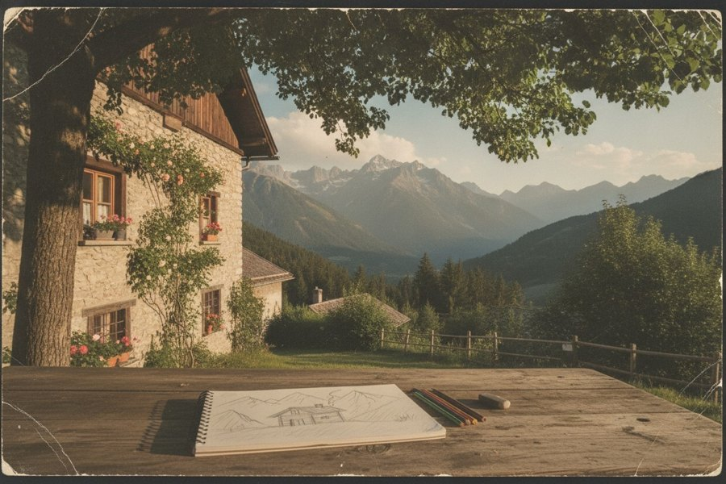

AI characters now have memories
“I remember my dream of electric sheep. It was wonderful.”— Clara, a COF character
“I remember my dream of electric sheep. It was wonderful.”— Clara, a COF character
An AI character has always been a description. A face, a voice, a way of speaking, a few traits. Describe it well and it performs itself convincingly, for as long as the conversation lasts. Then it forgets.
COF now gives characters a past. Not a log of what was said to them: a memory. Moments and periods of a life, what happened and with whom, how it felt then and how it feels now, how clearly it comes back — and what the character would rather not tell you.
It lives in the same open file as everything else that makes the character: its looks, its voice, its body, its rights. One .cof, readable by any tool, that you can keep, copy, and take elsewhere.
A memory here is not only words. It carries what the senses kept: a photograph, the sound of a river at night, a few seconds of film, a sentence someone said. These traces are what make a memory more than a note, and a character more than a description. A face, a voice and a list of traits describe someone from the outside; a past is what makes them someone from the inside. That piece was missing. With it, AI characters get closer to what we are, since we are, for a large part, what we remember — and what a character can become from there is only beginning to show.
This is the first memory in Clara's file. Clara is a fictional designer from Lyon, the example character that ships with the format.

The summer I was eight, my grandmother's house in a village at the foot of the Alps: the table under the lime tree, the notebook where I drew plans of huts, the sound of the river at night.
The memory as the file holds it: a gist in each of Clara's languages, markers, feelings, a clarity, and the traces that go with it.
A paragraph in a character sheet is read whole or not at all. A memory is a small, structured thing. When a conversation turns to childhood, an agent can bring this one up and leave the others aside. A renderer can blur its images the way faded memories blur. A text model can tell it with the hesitation of something half-remembered. The character's past becomes material, not filler.
Memories are nodes in a graph. A moment is a point in time; a period is a span; links say that one thing came after another, or because of it, or that a dream was about an evening. Readers put the rest together: the timeline, what belongs to what, the people who come back from one memory to the next. Nothing is told twice.
We are not our list of traits. We are what happened to us and what we made of it. A character with a past has reasons: Clara's obsession with lightness is not an adjective in a prompt, it is four years at an agency shipping interfaces too heavy, too fast. Give a character a memory and its opinions get a history. It stops being a style and starts being someone — shaped by what happened to it, the way a person is.
Nobody remembers in text. A memory is a light, a voice, a smell, a photograph on a shelf, a sentence heard once. So a COF memory carries a few traces — an image, a sound, a few seconds of film, a short text — alongside its words, and every reader uses the ones it can: an image generator shows the studio in the morning light, a voice engine hears the river, a text model tells the rest. The same memory, in every modality the character has. Until now, only the description of a character travelled between tools; now its sensory past does too.
Clara met the Martian on the Saône embankment. In a file that holds them both, each keeps their own memory of that evening — the same photograph, a different sentence, a different feeling. The format refuses to share the memory itself, only the picture. That refusal is what a point of view is.
A March evening, at 29, on the Saône embankment: a Martian, tall and calm, who asked me the way to the Confluences museum as if it were the most ordinary thing in the world. We walked for an hour. He wanted to understand why our screens are so heavy.Clara — marked “guarded”: told when asked, not volunteered
Every memory says how freely the character tells it: openly, only when asked or trusted, or never — while it still shapes how the character behaves. A character that answers every question is a search engine with a face. A character that decides what to tell you is a presence.
Vivid, clear, faded, fragment. A memory has a clarity, and tools honour it: images soften, voices hesitate, details go missing. Nothing in the format pretends that a memory is a database row. The character remembers the way we do, approximately, and that approximation is part of who it is.
This is the part that changes the most. A character's canon is written by its author and never rewritten by tools. But what happens in use — the conversations, the things it discovers with you — can be added as new memories, marked as lived, marked as yours. Six months with a character are no longer a platform's log. They are part of the character, in a file you own, that the next tool opens as it is.
For the first time, what a character became with you can leave with you.
Memory touches real lives, so the rules of the format follow it there. What is shown decides, not what is told: a childhood memory in words shows no child and carries no age; a memory with a picture names who is in it, and the file treats them as any face it holds. A memory of a real person needs that person's consent record and says whether it really happened. Personal memories never leave a file unless you ask them to, and a one-step purge keeps every word while dropping the images for an all-audiences copy. The same rules a .cof already applied to faces and voices now apply to the past.
Memories are a public specification, with a reference implementation and three tools that read them today. No account, no platform, no lock-in: the file is yours.
Hosts write back with one command: cof memory add. Every file also carries a short note, COF.md, that tells a reader without the specification how to read it and how to add to it.
Memories are the past. What a character made of it — its values, its beliefs, what it wants, what it fears, the wound it does not talk about, the things it believes about itself that are not true — is the next category, on the same graph. Each conviction linked to the memory it comes from. Without a psyche, memories are anecdotes; without memories, a psyche is a list of slogans. Together they are a character. The draft is written; it is the next step.
A natural question follows: how many autobiographical memories does a person hold — the moments of a life, not everything one knows — and how many bytes would they take with their sensory traces? Nobody has measured either, but the research gives an order of magnitude — a few thousand memories one can bring back — and Clara's file gives a price per memory. A hundred memories a year over fifty years, a megabyte each: about five thousand memories, about five gigabytes — a whole life's worth of moments on a phone, with room to spare. A companion page says where the figures come from, lets you test your own, and ends with an open question for researchers: whether the ultimate form of a character's memory is an archive, or a latent space — and why it may need both. How much could a life weigh? →
She remembers the lime tree, the river at night, a Martian who wanted to understand why our screens are so heavy. She does not know yet what she will remember of you.